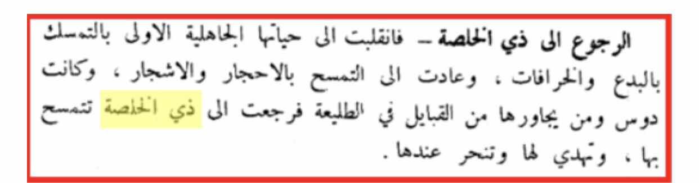
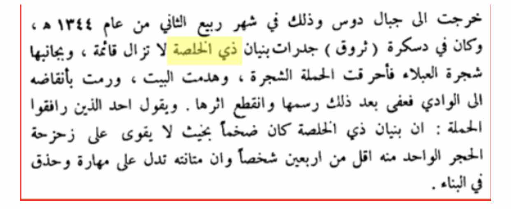
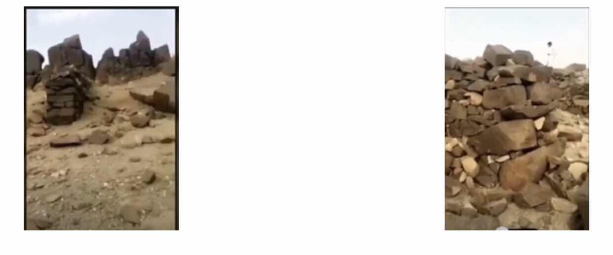

PROPHECY THAT DHI AL-KHILASA WOULD BE WORSHIPPED AGAIN
This is another example of an amazing prophecy. The short explanation for this is that
Muhammad ﷺ said that towards the end of time a specific idol would be worshipped again. Here is the hadith
“Allah’s Messenger (ﷺ) said, “The Hour will not be established till the buttocks of the
women of the tribe of Daus move while going round Dhi-al-Khalasa.” Dhi-al-Khalasa was the idol of the
Daus tribe which they used to worship in the Pre Islamic Period of ignorance.”
Around the 1800s, many Muslims turned to Bid’aa (innovation in religion), superstitions,
venerating stones & trees.
Daws along with the surrounding tribes began dedicating offerings to Dhi-al-Khalasa & sacrificing to it.

When King Abd Al Azeez took control of the Hijaz area, he sent military campaigns to subdue tribes & bring them under his control.
A campaign was sent to the mountains of Daws in 1925.

The soldiers found the pillars of Dhi-al-Khalasa still standing as well as a tree they venerated
called Al-Ablaa.
They burned the tree and destroyed the building of Dhi-al-Khalasa and threw the remains in a valley.

Above are images of the remains of this idol. In the footnotes is a video of the remains. [14]
Why is this such an amazing prophecy? Well Muhammad ﷺ mentioned an idol by name as well as a location.
What he said happened exactly like he said it would. Why would he risk his prophethood and say such a
statement if he was not who he says he was? People may say that this is self-fulfilling? How? Firstly,
the people who worshipped this were a Bedouin tribe somewhere in Arabia and its highly unlikely they even knew of this hadith.
Secondly, even if they did why would they worship it when they would know that it would be shirk (associating partners with Allah)
which is the greatest sin.
It does not make any sense. For those people who prefer a video explanation of this hadith, please see the footnotes. [15]
According to Professor Kamal Salibi:
“In the early seventh century, the worship of Dhu Khulasah was still popular in some Arabian regions;
its principal sanctuary was somewhere south of Mecca – the famous al-Kaaba al-Yamaniyah (the ‘Southern Kaaba’),
rivalling that of Mecca, and believed to have been located in Tubalah, in inland Asir.
After the triumph of Islam, Muhammad, we are told, sent a party of his followers to destroy the idol of
Dhu Khulasah which stood there – a sculpture of white stone depicting a phallus topped by a crown.
The cult of Dhu Khulasah, however, was subsequently resurrected in the region, where it survived until
1815. In that year, the Wahhabis organized a special military campaign to suppress remnants of pagan worship in
different parts of Asir, and the reconstructed idol of Dhu Khulasah in his original Kaaba of Tubalah was destroyed by gunfire.”
Reference: Who was Jesus? Conspiracy in Jerusalem; p. 146